Building a cat qubit, two photons at a time
A two-mode simulation of the dissipative cat: inflation, convergence, parity and the lifetime of the superposition, and four ways to prepare a codeword.
Every number on these slides is a printed output of an executed cell of intro_track.ipynb, run with dynamiqs 0.3.7 on jax 0.12.0.1. Hover a number to see the line it came from.
Real device rates in, two modes simulated
The model we simulate
Memory a and buffer b: the buffer is driven and lossy, and the coupling turns one buffer photon into two memory photons.
H = g₂* a² b† + g₂ a†² b − εd b† − εd* b
Lb = √κb b, La = √κa a
Target cat size α = 2.1. Rates from Réglade et al. (arXiv:2307.06617, Table S2), set in catqubit/params.py.
| Parameter | /2π (MHz) | Simulated (rad/µs) |
|---|---|---|
| Two-photon coupling g₂ | 0.763 | 4.7941 |
| Buffer loss κb | 2.6 | 16.3363 |
| Memory loss κa | 9.3 × 10−3 | 0.05843 |
| Buffer drive εd = α²g₂ | 21.1419 | |
| Two-photon loss κ₂ = 4g₂²/κb | 0.8956 | 5.6275 |
No number is typed by hand: each one is a printed result
catqubit/params.py
tools/build_notebook.pyintro_track.ipynb executed
dynamiqs 0.3.7 · jax 0.12.0.1tools/extract_task1_claims.py
→ results/task1/claims.jsontools/build_task1_deck.py
→ task1_deck.htmltools/verify_task1_deck.py
every number vs the JSONResults
274 printed lines parsed into claims.json with cell and line.
Derived
Ratios and percentages are computed from those results, and the formula is stored next to them.
Refusal
The extractor stops if any cell has an error or did not run, so stale output cannot reach a slide.
A coherent state stays coherent under one-photon loss
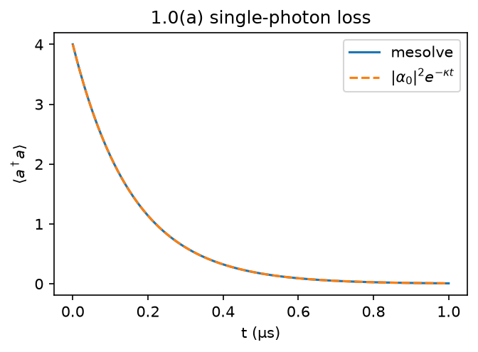
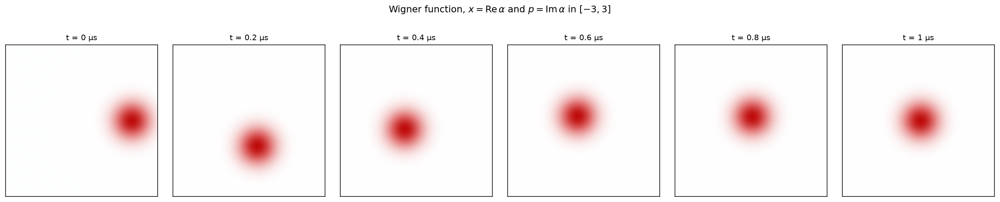
Detuned damped cavity, Δ/2π = κ/2π = 1 MHz, start |α₀ = 2⟩: loss shrinks the amplitude, detuning turns it, and a coherent state stays coherent.
Losing photons in pairs freezes the parity
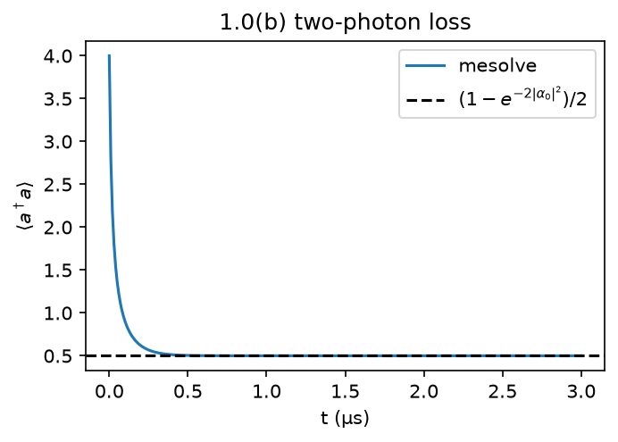
Loss of photon pairs (operator a²) cannot change parity. Odd states fall to |1⟩, even states to |0⟩, and a² does nothing to either.
The stall equals the odd part of |α₀ = 2⟩, (1 − e−8)/2. This parity rule is what protects the cat in 1.3.
Pair drive and loss grow a cat at a speed set by κ₂
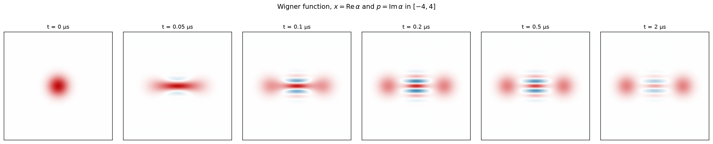
| Two-photon loss | ⟨a†a⟩ at 2 µs | t₉₀ (ns) | t₉₀·κ₂ | t₉₀·κ₂, κa = 0 |
|---|---|---|---|---|
| κ₂ × 0.25 | 4.3872 | 614.6 | 0.865 | 0.850 |
| κ₂ × 1 | 4.4040 | 151.7 | 0.854 | 0.850 |
| κ₂ × 4 | 4.4081 | 37.8 | 0.851 | 0.851 |
With κa = 0 the dissipator is κ₂·D[a² − α²], so the state depends only on κ₂t and t₉₀·κ₂ is the same for every rate.
Switching the drive on overshoots before it settles
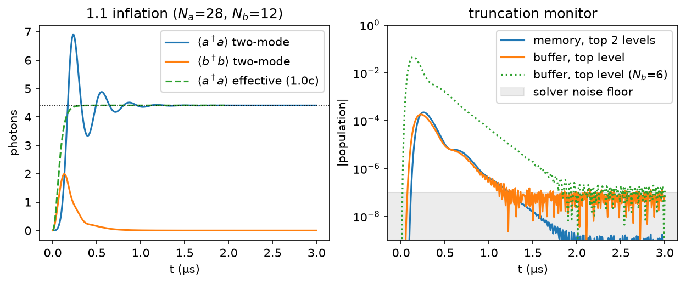
Top two memory levels stay below 2.2 × 10−4 and the top buffer level below 1.8 × 10−4: the box is big enough.
The memory ends as an even cat of the target size
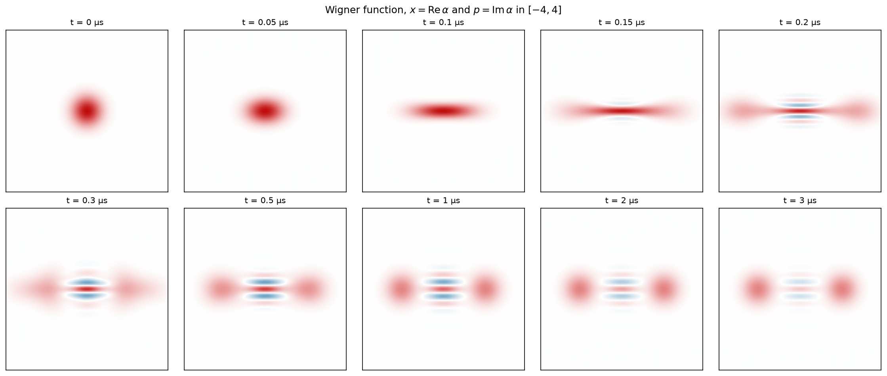
Two blobs at ±α with fringes between them: an even cat, because the vacuum we start from is even and pair processes keep it so.
Chosen box: Na = 28, Nb = 12, within 0.1% on both
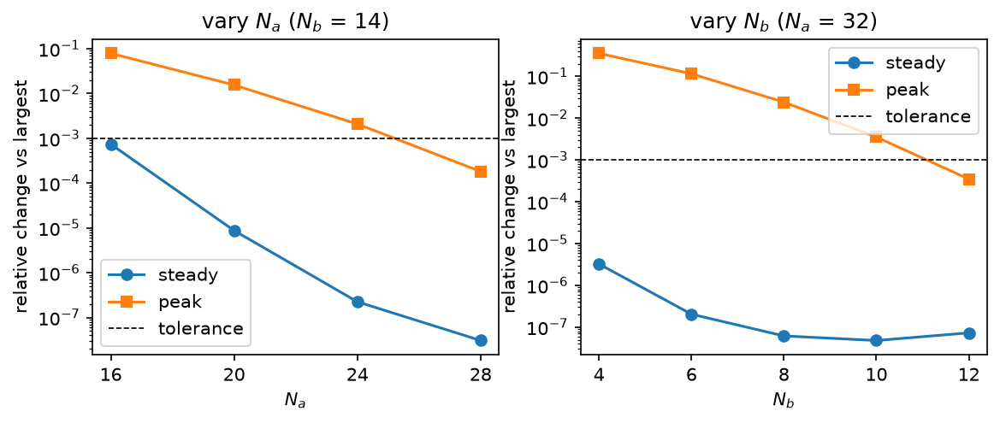
The final value converges at Na = 16, Nb = 4. The overshoot needs more levels, Na = 28, Nb = 12, because the memory briefly holds far more photons than α².
| Nb = 14 | final | peak |
|---|---|---|
| Na = 16 | 4.405889 | 6.36550 |
| Na = 20 | 4.402673 | 6.80347 |
| Na = 24 | 4.402636 | 6.89641 |
| Na = 28 | 4.402635 | 6.90957 |
| Na = 32 | 4.402635 | 6.91083 |
| Na = 32 | final | peak |
|---|---|---|
| Nb = 4 | 4.402649 | 4.46203 |
| Nb = 6 | 4.402634 | 6.11429 |
| Nb = 8 | 4.402634 | 6.74415 |
| Nb = 10 | 4.402635 | 6.88646 |
| Nb = 12 | 4.402635 | 6.90843 |
| Nb = 14 | 4.402635 | 6.91083 |
A small box and a loose solver both give wrong numbers
Solver tolerance
| Run | final ⟨a†a⟩ | most negative population |
|---|---|---|
| solver tolerance 10−6 | 4.402524 | −1.2 × 10−3 |
| solver tolerance 10−9 | 4.402635 | −1.3 × 10−6 |
A loose tolerance gives a wrong final value and negative probabilities. The tight one agrees with the converged sweep.
Starter box Nb = 6
Memory loss moves ⟨a†a⟩ by −0.17%; mean-field predicts the shift to 17%
The lossless run matches the exact α² tanh(α²) to every printed digit. The loss shift agrees with the mean-field estimate to 17%, which is expected for a first-order estimate.
Parity holds without memory loss and fades with it

Pair processes conserve parity, so only memory loss κa can flip it. Vacuum starts at ⟨P⟩ = +1, and the cat it grows is even.
| t | ⟨P⟩ | coherence | F(cat) | F(|+α⟩) | purity |
|---|---|---|---|---|---|
| 1 µs | 0.629 | 0.626 | 0.811 | 0.498 | 0.692 |
| 3 µs | 0.225 | 0.225 | 0.612 | 0.500 | 0.525 |
| 6 µs | 0.048 | 0.048 | 0.524 | 0.500 | 0.501 |
The cat stays a superposition for 1.95 µs
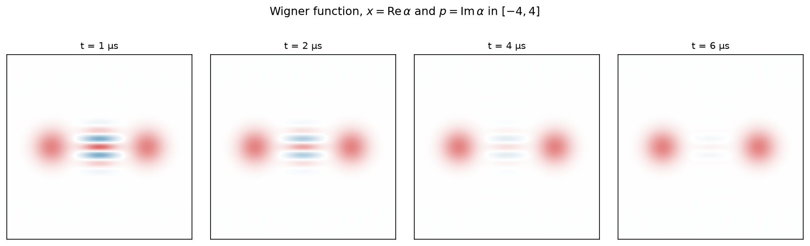
Same F(|+α⟩); only the coherence tells them apart

| State | F(|+α⟩) | ⟨P⟩ | coherence | purity |
|---|---|---|---|---|
| Our cat at 1 µs | 0.498 | 0.629 | 0.626 | 0.692 |
| Equal mixture of |±α⟩ | 0.500 | 0.000 | 0.000 | 0.500 |
Displaced start: a one-line model predicts the fidelity
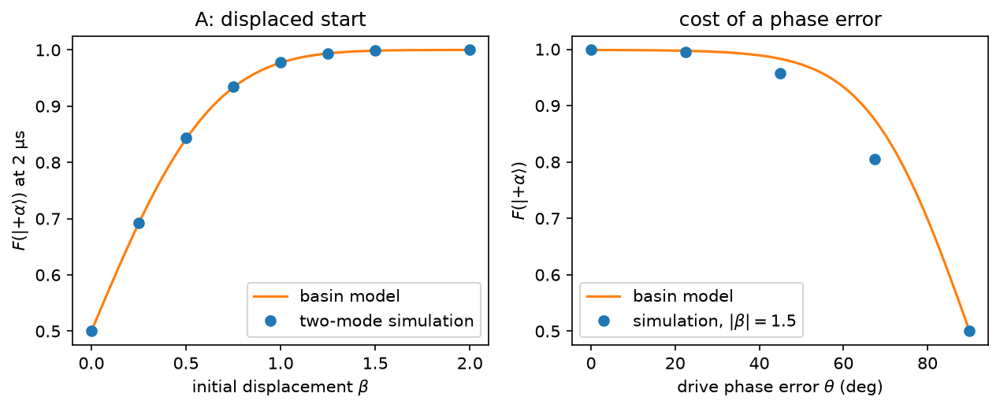
Displace the vacuum by β, then switch the stabilization on: the state rolls into the nearer well. Basin model, no free parameters: F = 1 − ½ erfc(√2 β).
| Push | sim | model |
|---|---|---|
| β = 0.00 | 0.5000 | 0.5000 |
| β = 0.50 | 0.8436 | 0.8413 |
| β = 1.00 | 0.9783 | 0.9772 |
| β = 1.50 | 0.9988 | 0.9987 |
| β = 2.00 | 1.0000 | 1.0000 |
| Phase | sim | model |
|---|---|---|
| 0.0° | 0.9988 | 0.9987 |
| 22.5° | 0.9946 | 0.9972 |
| 45.0° | 0.9573 | 0.9831 |
| 67.5° | 0.8057 | 0.8745 |
| 90.0° | 0.5000 | 0.5000 |
Bias pulse: no switching, but a strong drive
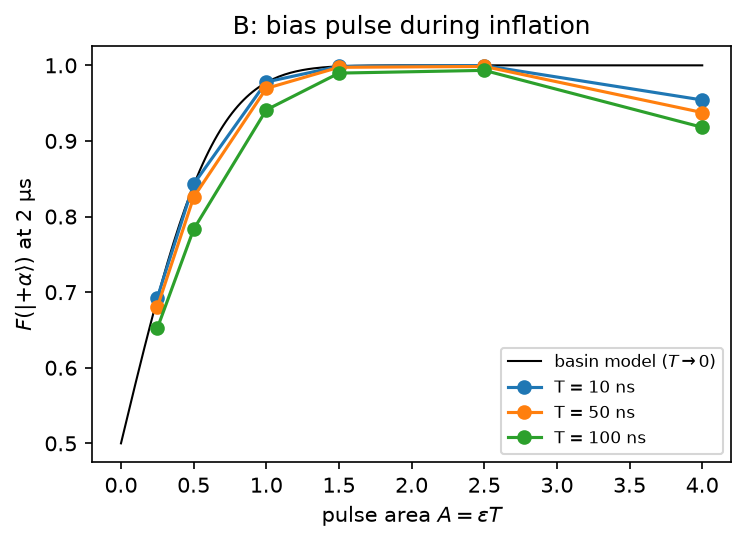
Keep the stabilization on and push the memory with a short resonant pulse while the cat inflates.
| Pulse | A = 0.25 | A = 0.5 | A = 1.0 | A = 1.5 | A = 2.5 | A = 4.0 | peak MHz |
|---|---|---|---|---|---|---|---|
| 10 ns | 0.6925 | 0.8428 | 0.9780 | 0.9987 | 0.9998 | 0.9542 | 64 |
| 50 ns | 0.6802 | 0.8255 | 0.9695 | 0.9974 | 0.9985 | 0.9376 | 13 |
| 100 ns | 0.6523 | 0.7831 | 0.9411 | 0.9897 | 0.9934 | 0.9181 | 6 |
Overdriving loses fidelity, and the buffer is why
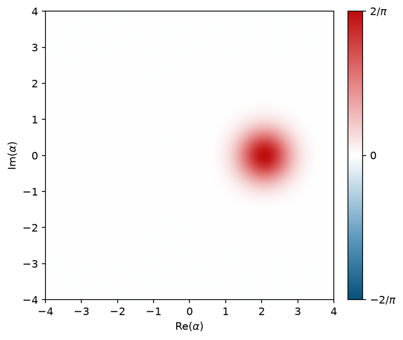
Pushing harder makes it worse. We checked this is physics, not the box:
So the drop comes from the buffer, which the one-mode model leaves out. Final Re⟨a⟩ = 2.092. Truncation monitor 2.5 × 10−3.
An amplifier model with no free parameters fits small pushes
With the stabilization on, noise in the memory is amplified at λ = κ₂α² = 24.8 /µs. A push is worth its area only if it lands before that growth: a late push is discounted.
That is why method B needs a drive of 10.5 g₂, and why a weak push held from the start fails.
| Pulse | βeff | model F | simulated F |
|---|---|---|---|
| 10 ns, A = 0.5 | 0.498 | 0.8405 | 0.8428 |
| 10 ns, A = 1.0 | 0.997 | 0.9769 | 0.9780 |
| 50 ns, A = 0.5 | 0.464 | 0.8235 | 0.8255 |
| 50 ns, A = 1.0 | 0.929 | 0.9684 | 0.9695 |
| 100 ns, A = 0.5 | 0.389 | 0.7818 | 0.7831 |
| 100 ns, A = 1.0 | 0.778 | 0.9402 | 0.9411 |
A weak push while the stabilization ramps beats A and B
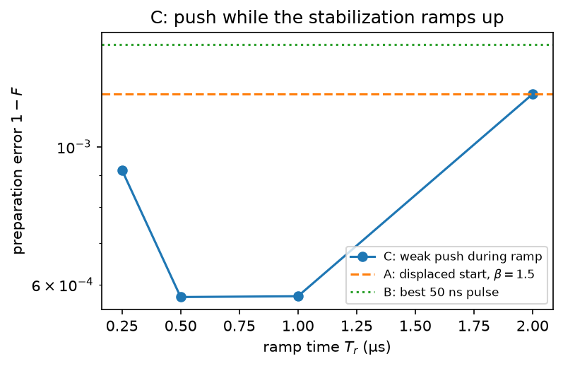
Ramp the stabilization up instead of switching it on. While λ is small a weak push is worth almost its full area, so the model sets the push for βeff = 1.5; nothing is fitted.
| Ramp | push (rad/µs) | push / g₂ | MHz | error |
|---|---|---|---|---|
| 0.25 µs | 8.08 | 1.68 | 1.29 | 9.2 × 10−4 |
| 0.50 µs | 5.77 | 1.20 | 0.92 | 5.7 × 10−4 |
| 1.00 µs | 4.37 | 0.91 | 0.70 | 5.7 × 10−4 |
| 2.00 µs | 3.29 | 0.69 | 0.52 | 1.2 × 10−3 |
Push exactly onto the codeword: a dark state
Method A's push, set to exactly β = α: displace with the pump off, then switch the pump and buffer drive on. On |α⟩|0⟩ the pair exchange gives g₂α², which the drive εd = α²g₂ cancels, and the buffer is empty:
H|α,0⟩ = 0, b|α,0⟩ = 0
So the codeword is a dark state of the full two-mode model. There is no transient and no basin to roll into; only memory loss acts.
| Start | error at 2 µs | Re⟨a⟩ |
|---|---|---|
| β = 1.80 | 1.31 × 10−4 | 2.098 |
| β = 2.10 | 8.41 × 10−6 | 2.098 |
| β = 2.30 | 4.63 × 10−5 | 2.098 |
| β = 2.50 | 2.02 × 10−4 | 2.097 |
With circuit terms, 14× below method C (68× in the two-mode model). Amplitude ±10%: 5.85 × 10−5 and 5.06 × 10−5. Phase 22.5°: 1.69 × 10−3, 45°: 2.73 × 10−2.
With circuit terms, D has 14× less error than C
| Method | error, no phase error | at 22.5° | at 45° | with circuit terms |
|---|---|---|---|---|
| A · displaced start | 1.22 × 10−3 | 5.45 × 10−3 | 4.27 × 10−2 | 1.30 × 10−3 |
| B · bias pulse | 1.46 × 10−3 | 4.26 × 10−3 | 1.27 × 10−2 | 1.32 × 10−3 |
| C · push during ramp | 5.75 × 10−4 | 1.89 × 10−3 | 3.67 × 10−2 | 7.78 × 10−4 |
| D · displace onto the codeword | 8.41 × 10−6 | 1.69 × 10−3 | 2.73 × 10−2 | 5.37 × 10−5 |
A
Stabilization must be off during the push, then switched on: extra sequencing and a turn-on calibration.
B
Stays on, but needs a drive of 8.0 MHz, far above g₂. Most tolerant of phase error.
C
Weak drive, lower error than A and B, but adds a buffer-drive ramp of about a microsecond and needs amplitude control.
D
Same drive line and pump-off push as A, aimed at β = α. Needs a phase lock; amplitude is forgiving.
Controls that switch one thing off, and a test suite
What we would tell the hardware team
The cat inflates to 4.4026 photons after an overshoot to 6.894; the box must be sized for the overshoot, not the final value.
Pair processes protect parity exactly; memory loss alone limits the superposition to 1.95 µs, as theory predicts.
Displacing exactly onto the codeword, a dark state of the two-mode model, prepares |+α⟩ with error 8.41 × 10−6; with circuit terms 5.37 × 10−5, 14× below method C.